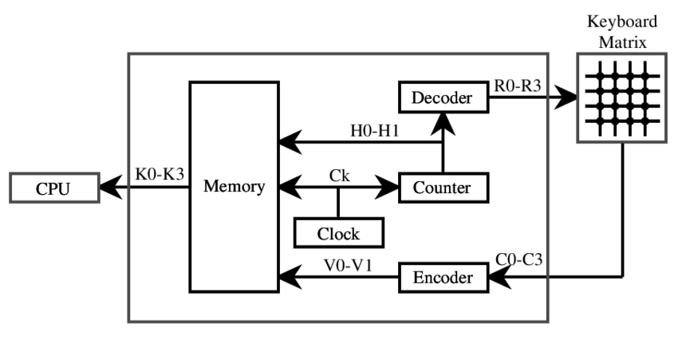

Teks merupakan representasi data yang terdiri dari kumpulan karakter, hurud, angka, dan simbol, yang digunakan untuk berkomunikasi. Dalam komputer, teks merujuk kepada data yang direpresentasikan dalam bentuk karater, baik huruf maupun simbol. Teks juga digunakan dalam pembuatan situs web, aplikasi, dan sistem informasi untuk menyampaikan informasi kepada pengguna, baik itu dalam bentuk artikel, instruksi, atau pesan interaktif. Teks memiliki peran sentral dalam menyediakan sarana untuk komunikasi, penyimpanan, dan pemrosesan informasi dalam lingkungan digital.
Kode ASCII
 Sumber gambar: SparkFun Learn.
Sumber gambar: SparkFun Learn.
Kode ASCII (American Standard Code for Information Interchange) adalah sebuah sistem pengkodean karakter yang digunakan dalam komputasi untuk merepresentasikan teks dan simbol. Setiap karakter dalam ASCII direpresentasikan oleh bilangan biner 7-bit, yang dapat mewakili 128 karakter yang berbeda, termasuk huruf, angka, simbol, dan karakter kontrol. Melalui kode ASCII, teks dapat diwakili secara digital dalam bentuk yang dapat dipahami oleh komputer, memungkinkan penyimpanan, pengolahan, dan pertukaran informasi dengan mudah antara sistem komputer.
Kode ASCII (American Standard Code for Information Interchange) dikembangkan oleh American National Standards Institute (ANSI) pada tahun 1963 dan dipublikasikan pada tahun 1967. Tujuan utamanya adalah untuk menyediakan standar pengkodean karakter yang konsisten untuk digunakan dalam komunikasi dan pertukaran data antara komputer dan perangkat lainnya. Kode ASCII menjadi salah satu standar yang paling luas digunakan dalam komputasi dan masih banyak digunakan hingga saat ini.
Keyboard dan Kode ASCII
 Sumber gambar: Research Gate, Richard SinnottKeyboard pada komputer menggunakan sejumlah tombol yang mewakili berbagai karakter, termasuk huruf, angka, simbol, dan fungsi khusus. Ketika tombol pada keyboard ditekan, sinyal elektrik dikirimkan ke komputer, dan keyboard mengirimkan kode khusus yang sesuai dengan tombol yang ditekan. Komputer kemudian menggunakan tabel pengkodean karakter, seperti ASCII atau Unicode, untuk memetakan kode tersebut ke karakter yang sesuai. Setelah karakter tersebut dipetakan, komputer mengirimkan informasi tersebut ke aplikasi atau program yang sedang aktif, sehingga huruf yang sesuai muncul di layar monitor. Dengan demikian, keyboard berfungsi sebagai antarmuka antara pengguna dan komputer untuk memasukkan karakter dan instruksi ke dalam sistem komputer.